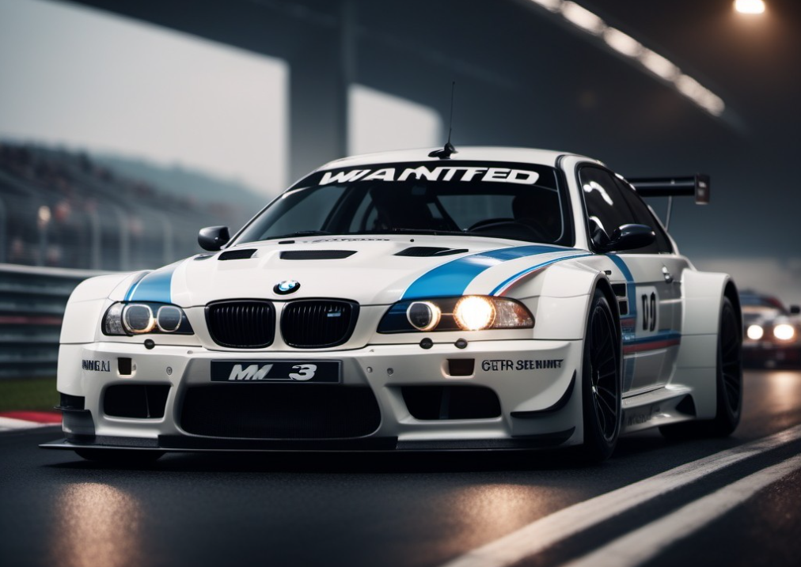
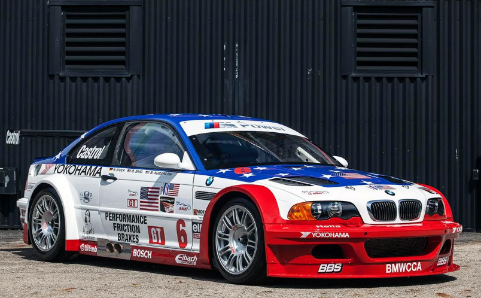

The BMW M3 is a high-performance version of the BMW 3 Series, developed by BMW's in-house motorsport division, BMW M GmbH. M3 models have been produced for every generation of 3 Series since the E30 M3 was introduced in 1986.
The initial model was available in a coupé body style, with a convertible body style made available soon after. M3 saloons were offered initially during the E36 (1994–1999) and E90 (2008–2012) generations. Since 2014, the coupé and convertible models have been rebranded as the 4 Series range, making the high-performance variant the M4. Variants of the 3 Series since then have seen the M3 produced as a saloon, until 2020
